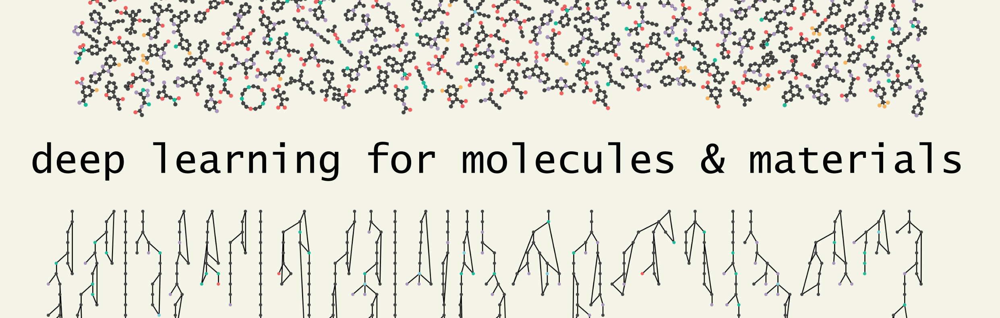

By
By この本の概要
Contents

この本の概要¶
化学や材料科学の分野において、ディープラーニングは標準的なツールになりつつあります。ディープラーニングとは、ある入力データ（特徴量）と出力データ（ラベル）をニューラルネットワークで記述される関数で結びつけることです。ニューラルネットワークは（数値的に）微分可能であり、あらゆる関数を近似することができる強力な道具です。例えば、分子の構造と機能を結びつけることはニューラルネットワークの古典的な活用の一つです。最近の例では、量子計算を劇的に高速化し、ニューラルネットワークでDFT計算レベルの高い精度を実現できるほどになっています。ディープラーニングが特に注目されるのは、これまで難解だった関数を近似するための強力なツールであること、 それに加えて、 新しいデータを生成する能力をもつためです。
この本では、ディープラーニングを、これまで古典的な機械学習では実現不可能だったモデルを構成できるツールの集合体として捉えていきます。ディープラーニングと古典的な機械学習の大きな違いは、特徴量エンジニアリングの必要性です。古典的な機械学習アルゴリズムを用いて予測モデルを構築する際、多くの場合は、データのどのような特徴が重要で、その特徴を分子からどのように計算するかの設計（特徴量エンジニアリング）が必要でした。用いる特徴量は予測性能に大きな影響を与えることから、特徴量エンジニアリングは研究者の頭を悩ませるステップの一つでした。ディープラーニングモデルは、通常、end-to-endで学習されます。すなわち、データのどの特徴が重要であるかという判断はもはや必要無く、分子構造を直接扱うことができるのです。
ディープラーニングがこれほど普及することになったもう一つの理由は、その柔軟性とツールとしての成熟性にあります。以前は、モデルごとに新しい方程式を導出・実装する必要があったため、機械学習におけるモデルの訓練と使用は面倒なものでした。ディープラーニングでは、ニューラルネットワークの学習という一つのアイディアだけで様々な問題に対応できることから、問題ごとに新たな手法を考える必要がなくなり、またモデルの変更も遥かに簡単になりました。ディープラーニングは、科学の新しいパラダイムでもなければ、科学者の代わりでもありません。分子や材料に適用する準備ができた成熟したツールなのです。
想定する読者¶
本書の対象読者は、プログラミングと化学のバックグラウンドを持ち、ディープラーニングを中心としたMaterials Informatics技術の習得に興味のある学生です。例えば、化学や材料科学の大学院生や上級学部生で、ある程度のPythonプログラミングのスキルを持つ人は、本書の恩恵を受けられるでしょう。セクションAとBでは、機械学習の原理を教育的に紹介していますが、機械学習の全てを網羅しているわけではなく、ディープラーニングに必要なトピックのみを取り上げています。例えば、決定木やSVMなどのトピックは、ディープラーニングを理解する上で重要ではないため、カバーされていません。セクションCでは、ディープラーニングの原理と、重要なGraph Neural NetworksやVariational Autoencoderなどの具体的なアーキテクチャの詳細について説明しています。その他の章では、Deep Learning on Sequencesのように、化学や材料科学を対象とした、より大きなトピックについて概要とサーベイを提供します。最後にセクションDでは、化学と材料科学における実際のディープラーニングの応用例として、より発展的な例を示しています。各セクションの冒頭で必要な背景知識を述べていますが、本書全体を通してPythonプログラミングの基本的なスキルを前提としています。化学に特化したPythonの入門書は、Molecular Sciences Software Instituteのリソースページで見つけることができます。 訳注：日本語で利用できる優れたPythonの入門リソースの一つには、東京大学 数理・情報教育研究センターが公開しているPythonプログラミング入門 #utpython の講義資料が挙げられます。
本書で用いるディープラーニングフレームワークについて¶
現代のディープラーニングの実装の大半は、ディープラーニングフレームワークの機能の上に成り立っています。したがってフレームワークの選択は学習プロセスの一部といえます。本書では、Pythonとnumpyに慣れていることは前提とした上で、Pythonによる実装のみを紹介します。ディープラーニングのフレームワークについては、Jax、Tensorflow、Kerasを目的に応じて使い分けています。Jaxは基本的にnumpyに自動微分とGPU/TPUアクセレレーションを加えたものなので、習得が簡単です。本書では、実装の詳細を理解し、数式をコードに落とし込むことが重要な場合に Jax を使用します。Kerasは、一般的なディープラーニングの機能が多く実装されている高水準のフレームワークです。Jaxより少ないコードでモデルを記述することができるため、より複雑なモデルを扱いたい時や、より完成度の高いモデルを見せたい時に使います。もちろん、完全なモデルにはJaxを使い、詳細な実装はKerasで見せることも可能です。これはあくまで原著者がフレームワークを選択した理由です。また、機械学習の導入についての章ではscikit-learnを扱います。scikit-learnは厳密にはディープラーニングではなく古典的な機械学習のパッケージですが、機械学習を用いた問題解決において最も広く用いられているパッケージの一つです。最後に、TensorflowはKerasの基盤となるライブラリで、Kerasで新しいレイヤーを実装したい場合は、Tensorflowを用いて実装することになります。TensorflowProbability は Tensorflow の拡張機能で、深層生成モデルで使用するランダム変数と確率分布をサポートしています。なお、本書では取り扱いませんが、 PyTorch は重要なディープラーニングフレームワークの一つです。これは最近、ディープラーニングの研究において最も人気のあるフレームワークとして普及しています。とはいえ根本的に、本書は数式と実装の詳細を紹介することで、フレームワークに依存しない概念を学ぶことができるようにしました。そのため、PyTorchやMXNet、あるいはこれから登場する新しいフレームワークであれ、すぐに本書のアイディアを実装できるはずです。
私が見る学生の最もよくある間違いの1つは、Webで質問を検索したり、ディープラーニングフレームワークのドキュメントを読んだりして、ディープラーニングを学ぼうとすることです。これは、ディープラーニングを学ぶには最悪の方法です。 世の中には多くの情報がありますが、こうしてしまうとディープラーニングについて歪んだ、フレームワーク特有の理解をしてしまうことになります。検索結果の上位にあるものは、関連性が高く人気があるかもしれませんが、それがあなたの学習の助けになるとは限らないことを覚えておいてください。さらに重要なのは、ブログやStack overflowでディープラーニングを学ぶと、数学と直感を把握するのがとても難しくなることです。Web検索やコードのハッキングは、（良くも悪くも）間違いなくディープラーニングの一部ですが、これは、実装したいモデルの背後にある数学と詳細をしっかり把握した後で行うべきものです。
インタラクティブな実行¶
この本の各章には、上部に ボタンが表示されていることに気づいた方がいるかもしれません。この本の各章は個別のJupyter Notebookとして書かれており、このボタンを押すと、その章がインタラクティブに実行可能なGoogle Colabとして開かれます。各章には、インストールが必要なパッケージに関する注意事項も記載されています。パッケージのインストールに問題がある場合は、本書で使用する全てのパッケージについて、動作確認がとれた最新バージョンの一覧をここから参照できます。
本書をインタラクティブに実行する場合、多くの章では計算のためGPU(Graphics Processing Unit)を利用することが有効です。ディープラーニングの計算はGPUを用いることで（CPUに比べ）非常に高速に実行することができ、GPUは最新の大規模なディープラーニングモデルの訓練には事実上必須と言って良いほどのデバイスです。GPUはGoogle Colab上で簡単に利用可能ですが、本書をローカルPCで実行する場合はGPUを計算に用いるために追加の手順が必要になるかもしれません。ローカルでGPUを使用する方法については、使用しているパッケージ（例：Jax、PyTorch、Tensorflow）のドキュメントを確認してください。しかし、本書で紹介される実行例はいずれもラップトップPCのCPU程度の計算リソースで十分に実行できるよう慎重に構築されているので、本書を学ぶにあたりGPUはオプションです。
本書で学ぶ主なモデル¶
ここでは、本書で実装を学ぶ主なモデルを紹介します。各exampleに直接リンクできないので、お手数ですがスクロールして参照してください。
graph convolutional neural networks, recurrent neural networks, dense neural networks, kernel learningを用いた分子の溶解度予測
SchNetモデルを用いた構造の空間群予測
Recurrent Neural Networkを用いた タンパク質やペプチドの溶解度予測 や ペプチドが赤血球を溶かすかの予測
with a graph convolutional neural network を用いた分子のエネルギー予測（DFTの1点計算）
recurrent neural networkを用いた新規分子の生成
variational autoencoders と equivariant data representationsを用いたポリマーのトラジェクトリの配置と埋め込み
logistic regressionを用いた分子の毒性予測.
この他にも、小さなexampleを数多く含みます。
目次¶
原著のコントリビューターの紹介¶
原著者は、ご提案や寄稿、誤りの指摘、そのほか本書の改善にご協力いただいたコントリビューターの皆様に感謝いたします。コントリビューターの皆様を以下に列挙します（Twitter IDも）。
寄稿いただいた章¶
Mehrad Ansari (@MehradAnsari)
章の一部の寄稿¶
Geemi Wellawatte (@GWellawatte)
内容についてのフィードバック¶
Lily Wang (@lilyminium)
Marc Finzi (@m_finzi)
Kevin Jablonka (@kmjablonka)
Elana Simon
Cathrine Bergh (@cathrinebergh)
コードや数式、文章の修正¶
Oion Akif
Heta Gandhi (@gandhi_heta)
Mattias Hartveit
Andreas Krämer
Mehrad Ansari (@MehradAnsari)
Ritsuya Niwayama
Varsha Jain
Simon Duerr
Julia Westermayr (@JWestermayr)
Ernest Awoonor-Williams
Joshua Schrier (@joshuaschrier)
Marin Bukov
Arun Pa Thiagarajan (@arunppsg)
Ankur Parmar
Erik Thiede (@erik_der_elch)
日本語版について¶
本書は、Andrew氏らによるオンラインブック”Deep Learning for Molecules and Materials”を、CC BY-NC 3.0ライセンスのもと、有志らにより翻訳したものです。翻訳作業はGitHub上で2022年7月より始まり、まだ活発に続いています。日本語版についてのフィードバックがあれば、日本語版のGitHubリポジトリのissueからお寄せいただければ幸いです。また翻訳のコントリビューションも募集しています。翻訳作業を手伝ってもいいよ、という方がいらっしゃれば上記GitHubをご参照ください。
翻訳者 （敬称略）¶
Yuta Suzuki (@resnant)
Issei Tomotsuka (@mt03kkk18wu)
@Riku-KANO
本書の引用について¶
本書（原著）を引用する場合は livecommsj overview article を引用してください:
@article{white2021deep,
title={Deep Learning for Molecules and Materials},
journal={Living Journal of Computational Molecular Science},
author={White, Andrew D},
url={https://dmol.pub},
year={2021},
volume={3},
number={1},
pages={1499},
doi={10.33011/livecoms.3.1.1499}
}
原著のファンディングサポート¶
Research reported in this work was supported by the National Institute of General Medical Sciences of the National Institutes of Health under award number R35GM137966. This material is based upon work supported by the National Science Foundation under Grant No. 1764415.
本書のライセンス (CC BY-NC 3.0)¶
Creative Commons Legal Code
Attribution-NonCommercial 3.0 Unported
ライセンスについての完全な説明は次を参照してください https://creativecommons.org/licenses/by-nc/3.0/ or at repo https://github.com/whitead/dmol-book
日本語版のライセンスについて¶
日本語版も、原著と同様にCC BY-NC 3.0ライセンスで公開されています。